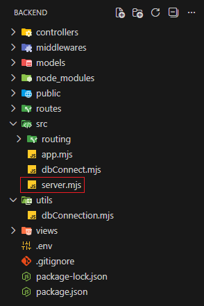
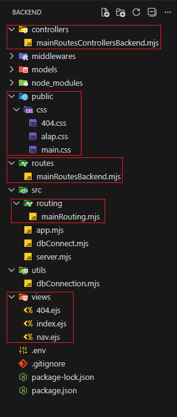

Alap route-olás

Ebben a részben létrehozzuk az első nézetünket (view), azaz a
belépési pontot meghatározó route-hoz tartozó
oldalt. Ezt a route-to hívhatjuk
mainRoute-nak és a URL-ben
/api-val hivatkozhatunk rá.
-
Hozzuk létre a következő állományokat:
-
mainControllersBackend.mjsacontrollersmappában, -
mainRoutesBackend.mjsaroutesmappában, -
mainRouting.mjsazsrc/routingmappában, -
nav.ejsaviewsmappában, -
index.ejsaviewsmappában, -
404.ejsaviewsmappában, -
alap.cssapublic/cssmappában, -
main.cssapublic/cssmappában, -
404.cssapublic/cssmappában.
 -